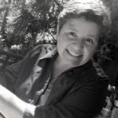

Isabel Zárate

Descodificadora Biológica
Me siento muy contenta de haber terminado mi formación en Descodificación Biológica. Soy otra después de haber transitado este tiempo de formación y transformación que ha sido intenso, pero al mismo tiempo, maravilloso. La experiencia del Diplomado ha sido un verdadero regalo de la vida. Otra belleza vivida durante este tiempo ha sido encontrar mi Misión de Vida…. “ser una palabra de Aliento”. Y entender la vida como ese amanecer y atardecer que vivimos cada día.
Enrique Blay
Psicólogo del desarrollo y descodificador biológico.
Conocí la Descodificación Biológica buscando la aplicación terapéutica de las teorías biológicas y alguna terapia capaz de actuar sobre las enfermedades corporales desde el nivel psicoemocional. Viendo la amplia formación que ofrecía Enric Corbera, decidí matricularme. Una excelente decisión porque no solo adquirí conocimiento y práctica en Descodificación Biológica, sino que también disfruté de todo ello junto al resto de alumnos. La Descodificación Biológica es una potente herramienta para el conocimiento de uno mismo, para aprender a escuchar el cuerpo y vivir en consecuencia.
María Laura Nosti
Grafóloga, con especialización en Selección de Personal y Grafopatologías.
Aun cuando uno cree que recorrió un largo camino, que sanó, que ya pasó, y qué voy a aprender yo, con toda la terapia que ya tengo y todos los libros que leí… Básicamente, la respuesta que encontré es que, sin empezar por la base, no había aprendido nada. Y tan llena de experiencias me creía. Un cliente me envió el programa de Ángeles Wolder en Buenos Aires allá por fines del 2015. Y luego, darme cuenta de que todo tiene un sentido, una biología, un para qué. Gracias Ángeles por enseñarme a entender la vida y la muerte, el salir del juicio, el acompañar y acompañarme en un camino de sanación.